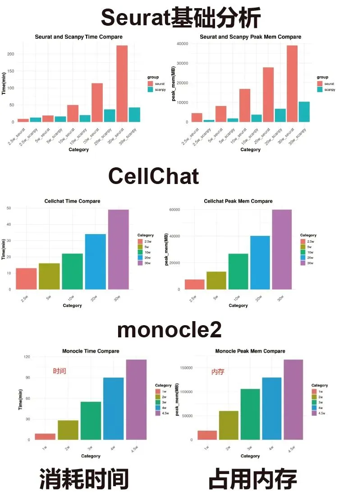
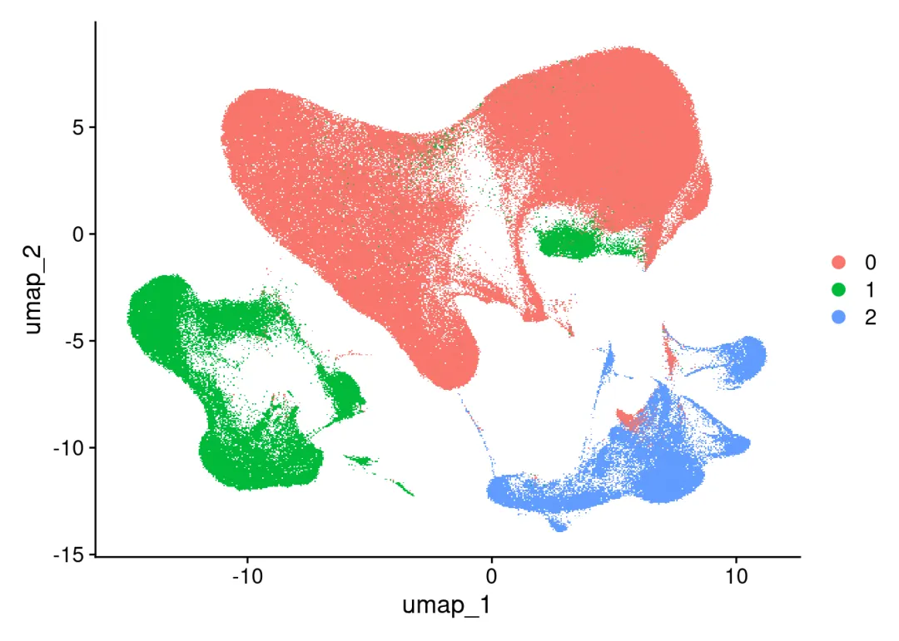
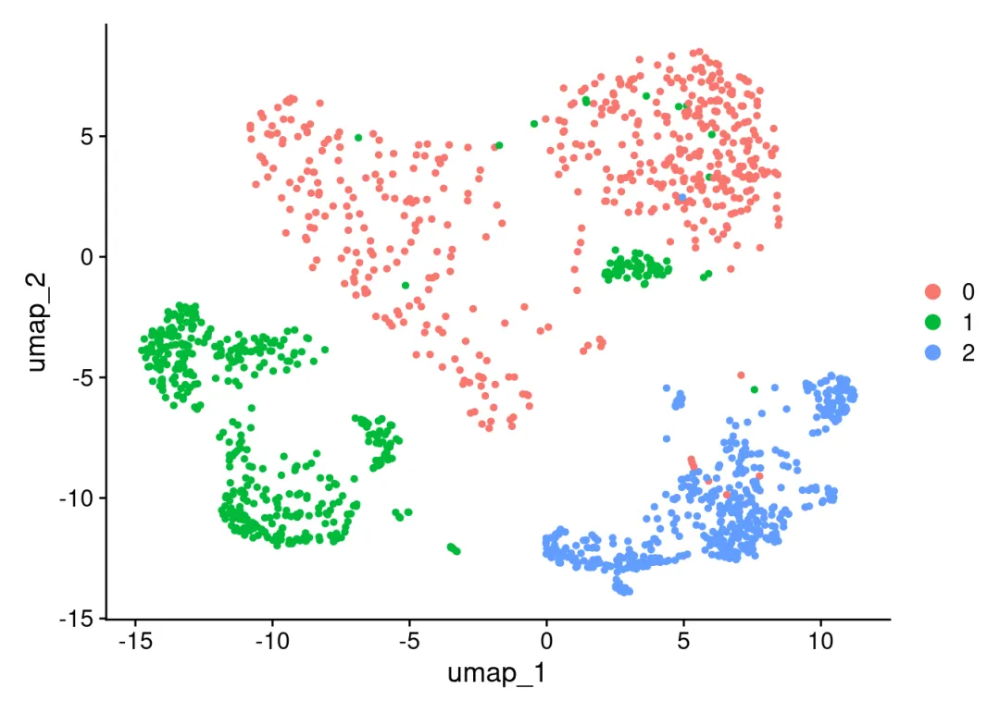
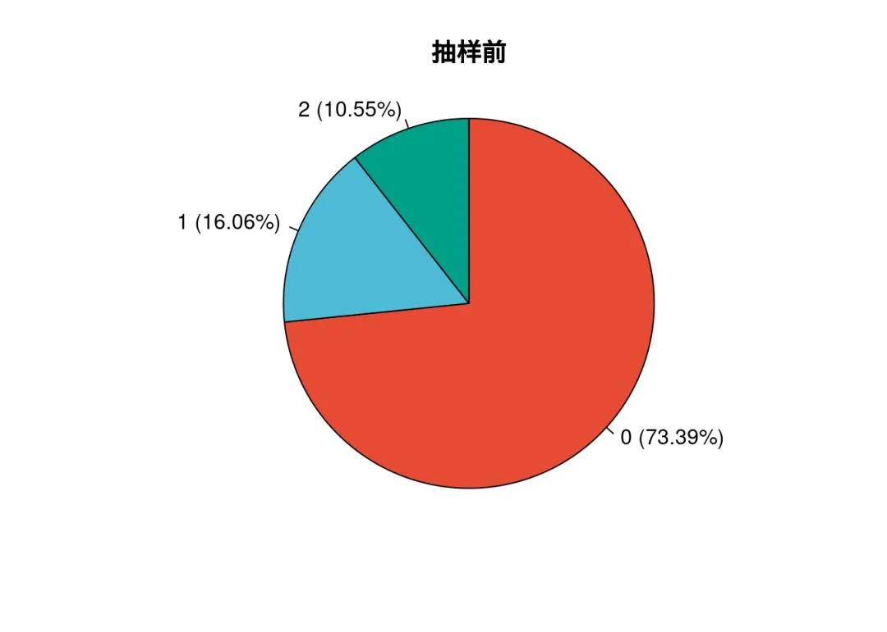
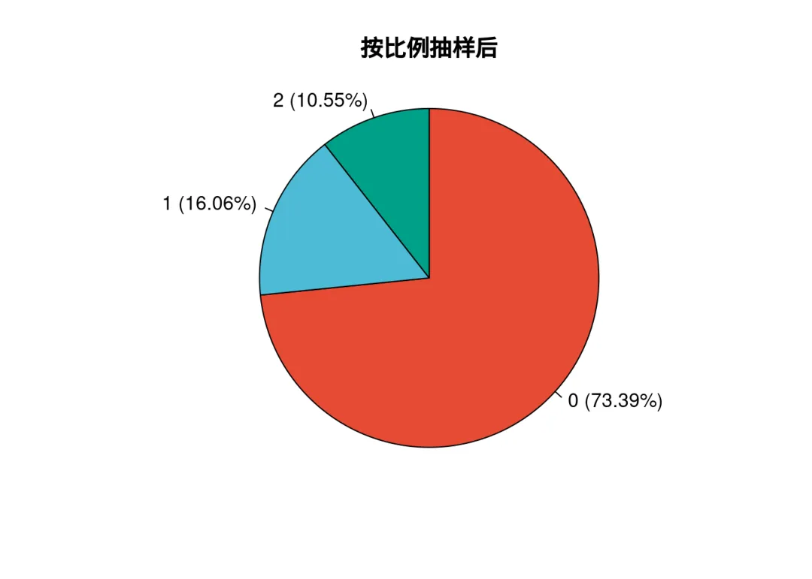

人生苦短，我downsample
原文：https://mp.weixin.qq.com/s?__biz=MzAwMzIzOTk5OQ==&mid=2247530367&idx=1&sn=f7452a93145295bd6dfc4a7e571413d6&chksm=9b3c0e2fac4b8739955570686f8761eabcbc635414ed7651dd4e91bfd9ffad98035a12be9962#rd 合集：答读者问
一、写在前面
总有同学抱怨自己分析数据时配置不够用，内存不够根本玩不转，又或者每次分析都要花费大量的时间。一方面大家可以看看入手足够完成硕博生涯的生信环境，另一方面，downsample下采样操作可以帮助大家节省大量的计算配置和时间。下采样的核心目标是在减少数据规模的同时，尽可能地保留原始数据的关键特征(如细胞类型比例、样本结构、质量分布等)，以便于达到提升计算效率、平衡样本/分组差异等目的。例如我们之前的压力测试合集中我们对基础分析、拟时序分析monocle2、细胞通讯CellChat分析分别进行了30w细胞以及下采样20w、10w、5w、2.5w分析时的内存、时间占用情况。总体来说，细胞数与计算时间、占用内存呈现正相关关系：

本文将颜色是几种常见的下采样逻辑和方式，系统性单细胞教程可见：scRNA-seq，从小白到文献复现大神！。本文基于Linux中的Rstudio环境制作。二、Downsample实操
2.1 测试数据
# 加载R包：
library(Seurat)
## Loading required package: SeuratObject
## Loading required package: sp
## 'SeuratObject' was built with package 'Matrix' 1.7.1 but the current
## version is 1.7.2; it is recomended that you reinstall 'SeuratObject' as
## the ABI for 'Matrix' may have changed
##
## Attaching package: 'SeuratObject'
## The following objects are masked from 'package:base':
##
## intersect, t
# 读取数据：
scRNA <-readRDS('data/scRNA.30w.rds')
# 数据包含的细胞数：
ncol(scRNA)
## [1] 333407
# 我们把数据分为3群，用于演示抽样过程：
DimPlot(scRNA)
## Rasterizing points since number of points exceeds 100,000.
## To disable this behavior set `raster=FALSE`

2.2 利用subset进行downsample
subset进行downsample的逻辑是按照激活的ident，从每一类ident中抽取指定数量的细胞，例如这里我们有0、1、2三种cluster， downsample对每个cluster抽取500个细胞，那默认就是共抽取1500个细胞。
# 取一万个细胞：
obj_1.5k <-subset(scRNA,downsample=500)
# 查看抽取的细胞数：
ncol(obj_1.5k)
## [1] 1500
# 这种情况下降维也是可以保留的
DimPlot(obj_1.5k)

如果你想按照其它分类变量进行抽取，可以做相应的调整。例如这里可以换一种默认的分类变量。
# 例如注释文件种存在这一列：
unique(scRNA$RNA_snn_res.1.2)
## [1] 4 10 32 6 18 13 24 14 12 39 15 8 2 21 47 16 9 7 29 23 20 1 33 61 3
## [26] 49 58 48 0 28 19 27 5 68 69 60 31 26 67 17 11 57 54 38 43 70 71 36 62 45
## [51] 42 55 37 30 41 25 66 22 51 40 52 46 44 53 50 63 34 35 59 56 65 64
## 72 Levels: 0 1 10 11 12 13 14 15 16 17 18 19 2 20 21 22 23 24 25 26 27 ... 9
# 更改默认分类变量：
Idents(scRNA) <-'RNA_snn_res.1.2'
# 此时取出的细胞数就是3w
obj_3w <-subset(scRNA,downsample=500)
# 查看细胞数量：
ncol(obj_3w)
## [1] 32928
敏锐的大家相比已经发现了问题，不对啊，我们downsample明明指定的数字是500，显然32928这个数字并不是500的整数，那我们来看一下下采样前后各cluster的数字变化：
# 下采样前：
table(Idents(scRNA))
##
## 0 1 10 11 12 13 14 15 16 17 18 19 2
## 25785 20309 11042 9777 8219 8204 7855 7636 7241 7057 7052 6098 14969
## 20 21 22 23 24 25 26 27 28 29 3 30 31
## 5387 5332 5206 4771 4763 4617 4559 4510 4267 4134 14945 4079 3673
## 32 33 34 35 36 37 38 39 4 40 41 42 43
## 3631 3619 2834 2717 2527 2460 2198 2122 14593 2042 1587 1423 1449
## 44 45 46 47 48 49 5 50 51 52 53 54 55
## 1384 1374 1329 1183 1135 1107 13581 1000 992 958 904 725 660
## 56 57 58 59 6 60 61 62 63 64 65 66 67
## 627 501 462 432 12747 408 406 388 382 300 245 219 198
## 68 69 7 70 71 8 9
## 187 129 11746 114 58 11597 11240
# 下采样后：
table(Idents(obj_3w))
##
## 0 1 10 11 12 13 14 15 16 17 18 19 2 20 21 22 23 24 25 26
## 500 500 500 500 500 500 500 500 500 500 500 500 500 500 500 500 500 500 500 500
## 27 28 29 3 30 31 32 33 34 35 36 37 38 39 4 40 41 42 43 44
## 500 500 500 500 500 500 500 500 500 500 500 500 500 500 500 500 500 500 500 500
## 45 46 47 48 49 5 50 51 52 53 54 55 56 57 58 59 6 60 61 62
## 500 500 500 500 500 500 500 500 500 500 500 500 500 500 462 432 500 408 406 388
## 63 64 65 66 67 68 69 7 70 71 8 9
## 382 300 245 219 198 187 129 500 114 58 500 500
可以发现，如果对应cluster满足500个细胞的标准，则抽取500个细胞，否则保留该cluster的全部细胞。
2.3 整体抽取
显然，上面的subset方式具有一定的局限性。那么问题又来了，如果你不想平衡这些细胞类型，想从整个SeuratObj中抽取对应数量的细胞，又该如何操作呢。学过我们5.5h入门R语言的小伙伴应该能想起来用随机数从所有细胞类型中进行抽样。那我们简单定义一个抽样函数：
# 这个函数在进行抽样时可以指定n(总体抽样细胞数)、prop(抽样比例)、seed(随机数)
downsample_random <-function(seurat_obj, n =NULL, prop =NULL, seed =123) {
# 检查参数有效性
if (is.null(n) &&is.null(prop)) {
stop("必须指定n（绝对数量）或prop（比例）！")
}
if (!is.null(n) &&!is.null(prop)) {
stop("只能指定n或prop中的一个！")
}
total_cells <-ncol(seurat_obj)
if (!is.null(n) && n >= total_cells) {
warning("指定的n大于总细胞数，返回原始对象！")
return(seurat_obj)
}
if (!is.null(prop) && (prop <=0|| prop >1)) {
stop("prop必须在(0, 1]范围内！")
}
# 计算目标细胞数
if (!is.null(prop)) {
n <-round(total_cells * prop)
}
# 随机抽样
set.seed(seed)
selected_cells <-sample(colnames(seurat_obj), size = n, replace =FALSE)
seurat_sub <- seurat_obj[, selected_cells]
message(paste0("原始细胞数: ", total_cells, "，下采样后细胞数: ", ncol(seurat_sub)))
return(seurat_sub)
}
演示一下函数功能：
# 抽取5000个细胞：
obj_5k <-downsample_random(seurat_obj = scRNA, n =5000, seed =2025)
## 原始细胞数: 333407，下采样后细胞数: 5000
# 抽取10%的细胞：
obj_0.1<-downsample_random(seurat_obj = scRNA, prop =0.1, seed =2025)
## 原始细胞数: 333407，下采样后细胞数: 33341
# 设置随机数的好处就是结果可以完全重现，例如我们再进行一次抽样：
obj_0.1_back <-downsample_random(seurat_obj = scRNA, prop =0.1, seed =2025)
## 原始细胞数: 333407，下采样后细胞数: 33341
# 可以看到细胞名完全重合：
table(colnames(obj_0.1) %in%colnames(obj_0.1_back))
##
## TRUE
## 33341
2.4 保留细胞比例的下采样
细心的小伙伴已经发现了，上述的两种办法，无论是整体抽样还是在各cluster中固定抽样，都无法保证抽出的各细胞比例一致。可能会导致后续分析结果有偏，那我们再定义一个函数。
downsample_stratified <-function(seurat_obj, n_total =NULL, prop =NULL,
cell_type_col ="ident", seed =123) {
# 参数验证
if (is.null(n_total) &&is.null(prop)) {
stop("必须指定 n_total（目标细胞总数）或 prop（抽样比例）中的一个！")
}
if (!is.null(n_total) &&!is.null(prop)) {
stop("只能指定 n_total 或 prop 中的一个参数！")
}
# 获取元数据并确保类型一致
meta_data <- seurat_obj@meta.data
cell_types <-as.character(meta_data[[cell_type_col]])
all_cells <-colnames(seurat_obj) # 获取所有细胞barcode
# 计算原始细胞类型分布
type_counts <-table(cell_types)
total_original <-length(all_cells)
# 根据比例计算目标细胞数
if (!is.null(prop)) {
if (prop <=0|| prop >1) {
stop("prop 必须在 (0, 1] 范围内！")
}
n_total <-round(total_original * prop)
message(paste0("根据比例计算目标细胞数: ", n_total, " (原始细胞数: ", total_original, ")"))
}
# 检查目标细胞数是否合理
if (n_total > total_original) {
stop("目标总细胞数 n_total 不能超过原始细胞数！")
}
if (n_total <=0) {
stop("目标总细胞数 n_total 必须为正数！")
}
# 计算各类型的抽样数量
type_props <- type_counts / total_original
n_per_type <-round(type_props * n_total)
# 调整抽样数量确保总和等于目标值
sum_diff <- n_total -sum(n_per_type)
if (sum_diff !=0) {
# 按细胞数量降序分配差异
type_order <-order(n_per_type, decreasing =TRUE)
for (i in 1:abs(sum_diff)) {
idx <- type_order[(i -1) %%length(type_order) +1]
n_per_type[idx] <- n_per_type[idx] +sign(sum_diff)
}
}
# 确保不超过各类型的原始数量
n_per_type <-pmin(n_per_type, type_counts)
n_per_type <-pmax(n_per_type, 0)
# 按类型抽样
set.seed(seed)
selected_cells <-character(0)
for (type innames(type_counts)) {
# 获取该类型的所有细胞barcode
cells_in_type <- all_cells[cell_types == type]
sample_size <-as.integer(n_per_type[type])
# 跳过抽样数为0的类型
if (sample_size <=0||length(cells_in_type) ==0) next
# 安全抽样
if (sample_size >length(cells_in_type)) {
warning(paste0("细胞类型 '", type, "' 抽样数量 (", sample_size,
") 超过可用数量 (", length(cells_in_type), ")，调整为可用数量"))
sample_size <-length(cells_in_type)
}
# 执行抽样
sampled <-sample(cells_in_type, size = sample_size, replace =FALSE)
selected_cells <-c(selected_cells, sampled)
}
# 验证结果
if (length(selected_cells) ==0) {
stop("未筛选到任何细胞，请检查参数或细胞类型定义！")
}
# 创建子集对象 (适配Seurat V5)
seurat_sub <-subset(seurat_obj, cells = selected_cells)
# 计算并显示抽样前后的比例对比
new_counts <-table(as.character(seurat_sub@meta.data[[cell_type_col]]))
new_total <-length(selected_cells)
new_props <-prop.table(new_counts) *100
message("\n细胞类型比例对比（原始% → 抽样后%）:")
for (type innames(type_props)) {
orig_pct <-round(type_props[type] *100, 2)
new_pct <-if (type %in%names(new_props)) round(new_props[type], 2) else0
message(sprintf(" %-10s: %6.2f%% → %6.2f%%", type, orig_pct, new_pct))
}
message(paste0("\n分层下采样完成，总细胞数: ", new_total, " (目标: ", n_total, ")"))
return(seurat_sub)
}
功能演示：
# 查看抽样前的细胞比例：
Idents(scRNA) <- scRNA$RNA_snn_res.0.001
# 比例数字：
table(Idents(scRNA))/ncol(scRNA)
##
## 0 1 2
## 0.7338868 0.1606415 0.1054717
# 画个饼图瞅瞅啥情况(更多比例可视化可参考：https://mp.weixin.qq.com/s/hgDM6IknZefSFexfYfdkaw?payreadticket=HEsrEQ3LsdamZSkHhAHJwsNdSv9v_WDk2ZmmODv0mKb1-PKzevUFkRVaVeZROw8T0CBa_WY)：
library(plotrix)
library(dplyr)
##
## Attaching package: 'dplyr'
## The following objects are masked from 'package:stats':
##
## filter, lag
## The following objects are masked from 'package:base':
##
## intersect, setdiff, setequal, union
library(ggsci)
mynames <-table(Idents(scRNA)) %>%names()
myratio <-table(Idents(scRNA)) %>%as.numeric()
pielabel <-paste0(mynames," (", round(myratio/sum(myratio)*100,2), "%)")
cols <-pal_npg("nrc")(10)#
cols
## [1] "#E64B35FF" "#4DBBD5FF" "#00A087FF" "#3C5488FF" "#F39B7FFF" "#8491B4FF"
## [7] "#91D1C2FF" "#DC0000FF" "#7E6148FF" "#B09C85FF"
pie(myratio, labels=pielabel,
radius =1.0,clockwise=T,
main ="抽样前",col = cols)

# 按固定细胞数抽样
obj_num <-downsample_stratified(
seurat_obj = scRNA,
n_total =30000,
cell_type_col ="RNA_snn_res.0.001"
)
##
## 细胞类型比例对比（原始% → 抽样后%）:
## 0 : 73.39% → 73.39%
## 1 : 16.06% → 16.06%
## 2 : 10.55% → 10.55%
##
## 分层下采样完成，总细胞数: 30000 (目标: 30000)
mynames <-table(Idents(obj_num)) %>%names()
myratio <-table(Idents(obj_num)) %>%as.numeric()
pielabel <-paste0(mynames," (", round(myratio/sum(myratio)*100,2), "%)")
cols <-pal_npg("nrc")(10)#
cols
## [1] "#E64B35FF" "#4DBBD5FF" "#00A087FF" "#3C5488FF" "#F39B7FFF" "#8491B4FF"
## [7] "#91D1C2FF" "#DC0000FF" "#7E6148FF" "#B09C85FF"
pie(myratio, labels=pielabel,
radius =1.0,clockwise=T,
main ="按数量抽样后",col = cols)
# 按细胞比例抽样：
obj_prop <-downsample_stratified(
seurat_obj = scRNA,
prop =0.1,
cell_type_col ="RNA_snn_res.0.001",
seed =123
)
## 根据比例计算目标细胞数: 33341 (原始细胞数: 333407)
##
## 细胞类型比例对比（原始% → 抽样后%）:
## 0 : 73.39% → 73.39%
## 1 : 16.06% → 16.06%
## 2 : 10.55% → 10.55%
##
## 分层下采样完成，总细胞数: 33341 (目标: 33341)
mynames <-table(Idents(obj_prop)) %>%names()
myratio <-table(Idents(obj_prop)) %>%as.numeric()
pielabel <-paste0(mynames," (", round(myratio/sum(myratio)*100,2), "%)")
cols <-pal_npg("nrc")(10)#
cols
## [1] "#E64B35FF" "#4DBBD5FF" "#00A087FF" "#3C5488FF" "#F39B7FFF" "#8491B4FF"
## [7] "#91D1C2FF" "#DC0000FF" "#7E6148FF" "#B09C85FF"
pie(myratio, labels=pielabel,
radius =1.0,clockwise=T,
main ="按比例抽样后",col = cols)

ok，相信足够满足大家主流的下采样需求了，当然，有更多想法也欢迎随时在留言区许愿。
三、演示环境
一切不提供计算环境信息的教程都是耍流氓：
sessionInfo()
## R version 4.4.2 (2024-10-31)
## Platform: x86_64-pc-linux-gnu
## Running under: Ubuntu 20.04.4 LTS
##
## Matrix products: default
## BLAS: /usr/lib/x86_64-linux-gnu/openblas-pthread/libblas.so.3
## LAPACK: /usr/lib/x86_64-linux-gnu/openblas-pthread/liblapack.so.3; LAPACK version 3.9.0
##
## locale:
## [1] LC_CTYPE=en_US.UTF-8 LC_NUMERIC=C
## [3] LC_TIME=en_US.UTF-8 LC_COLLATE=en_US.UTF-8
## [5] LC_MONETARY=en_US.UTF-8 LC_MESSAGES=en_US.UTF-8
## [7] LC_PAPER=en_US.UTF-8 LC_NAME=C
## [9] LC_ADDRESS=C LC_TELEPHONE=C
## [11] LC_MEASUREMENT=en_US.UTF-8 LC_IDENTIFICATION=C
##
## time zone: Etc/UTC
## tzcode source: system (glibc)
##
## attached base packages:
## [1] stats graphics grDevices utils datasets methods base
##
## other attached packages:
## [1] ggsci_3.2.0 dplyr_1.1.4 plotrix_3.8-4 Seurat_5.2.1
## [5] SeuratObject_5.0.2 sp_2.2-0
##
## loaded via a namespace (and not attached):
## [1] deldir_2.0-4 pbapply_1.7-2 gridExtra_2.3
## [4] airports_0.1.0 rlang_1.1.5 magrittr_2.0.3
## [7] RcppAnnoy_0.0.22 spatstat.geom_3.4-1 matrixStats_1.5.0
## [10] ggridges_0.5.6 compiler_4.4.2 png_0.1-8
## [13] vctrs_0.6.5 reshape2_1.4.4 stringr_1.5.1
## [16] pkgconfig_2.0.3 fastmap_1.2.0 labeling_0.4.3
## [19] promises_1.3.2 rmarkdown_2.29 tzdb_0.4.0
## [22] openintro_2.5.0 purrr_1.0.2 xfun_0.50
## [25] cachem_1.1.0 jsonlite_1.8.9 goftest_1.2-3
## [28] later_1.4.1 spatstat.utils_3.1-4 irlba_2.3.5.1
## [31] parallel_4.4.2 cluster_2.1.8 R6_2.5.1
## [34] ica_1.0-3 spatstat.data_3.1-6 stringi_1.8.4
## [37] bslib_0.9.0 RColorBrewer_1.1-3 reticulate_1.40.0
## [40] spatstat.univar_3.1-3 parallelly_1.42.0 lmtest_0.9-40
## [43] jquerylib_0.1.4 scattermore_1.2 Rcpp_1.0.14
## [46] knitr_1.49 tensor_1.5 future.apply_1.11.3
## [49] zoo_1.8-12 cherryblossom_0.1.0 readr_2.1.5
## [52] sctransform_0.4.1 httpuv_1.6.15 Matrix_1.7-2
## [55] splines_4.4.2 igraph_2.1.4 tidyselect_1.2.1
## [58] abind_1.4-8 rstudioapi_0.17.1 yaml_2.3.10
## [61] spatstat.random_3.4-1 spatstat.explore_3.4-3 codetools_0.2-20
## [64] miniUI_0.1.1.1 listenv_0.9.1 lattice_0.22-6
## [67] tibble_3.2.1 plyr_1.8.9 withr_3.0.2
## [70] shiny_1.10.0 ROCR_1.0-11 evaluate_1.0.3
## [73] Rtsne_0.17 future_1.34.0 fastDummies_1.7.5
## [76] survival_3.8-3 polyclip_1.10-7 fitdistrplus_1.2-2
## [79] pillar_1.10.1 KernSmooth_2.23-26 plotly_4.10.4
## [82] generics_0.1.3 RcppHNSW_0.6.0 hms_1.1.3
## [85] ggplot2_3.5.1 munsell_0.5.1 scales_1.3.0
## [88] globals_0.16.3 xtable_1.8-4 glue_1.8.0
## [91] lazyeval_0.2.2 tools_4.4.2 data.table_1.16.4
## [94] RSpectra_0.16-2 RANN_2.6.2 dotCall64_1.2
## [97] cowplot_1.1.3 grid_4.4.2 tidyr_1.3.1
## [100] colorspace_2.1-1 nlme_3.1-168 patchwork_1.3.0
## [103] usdata_0.3.1 cli_3.6.3 spatstat.sparse_3.1-0
## [106] spam_2.11-1 viridisLite_0.4.2 uwot_0.2.2
## [109] gtable_0.3.6 sass_0.4.9 digest_0.6.37
## [112] progressr_0.15.1 ggrepel_0.9.6 htmlwidgets_1.6.4
## [115] farver_2.1.2 htmltools_0.5.8.1 lifecycle_1.0.4
## [118] httr_1.4.7 mime_0.12 MASS_7.3-64
四、学习手册与测试文件下载
切不给测试文件的教程都是耍流氓，本推送的代码和测试文件可以在以下链接中下载：
通过网盘分享的文件：
通过网盘分享的文件：人生苦短_我downsample
链接: https://pan.baidu.com/s/1s50f6GTcRQqp_f0_U4UE4A?pwd=2ti4
提取码: 2ti4

如何联系我们

 留一个领取资料、开箱即用的单细胞分析镜像的微信号[Biomamba_zhushou]，方便各位随时交流。同时我们也构建了交流群矩阵，欢迎大家入群讨论。
大家可以阅读完这几篇之后添加给生信入门初学者的小贴士
没有检索，就没有发言权
留一个领取资料、开箱即用的单细胞分析镜像的微信号[Biomamba_zhushou]，方便各位随时交流。同时我们也构建了交流群矩阵，欢迎大家入群讨论。
大家可以阅读完这几篇之后添加给生信入门初学者的小贴士
没有检索，就没有发言权
已有生信基地联系方式的同学无需重复添加

 您点的每个赞和在看，我都认真当成了喜欢
您点的每个赞和在看，我都认真当成了喜欢